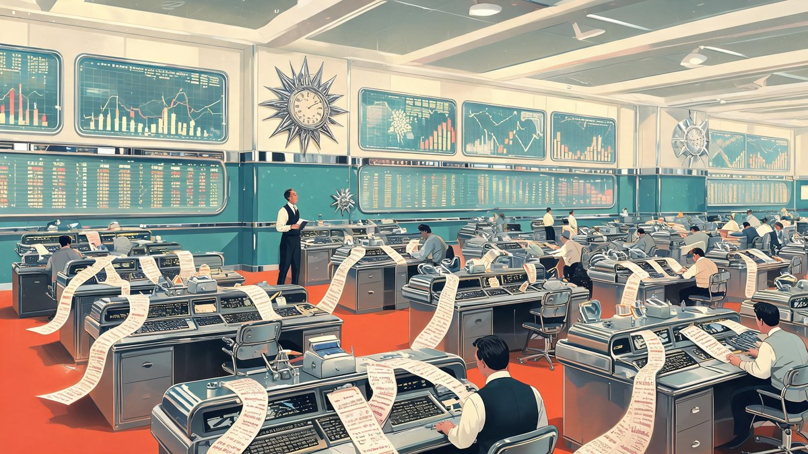
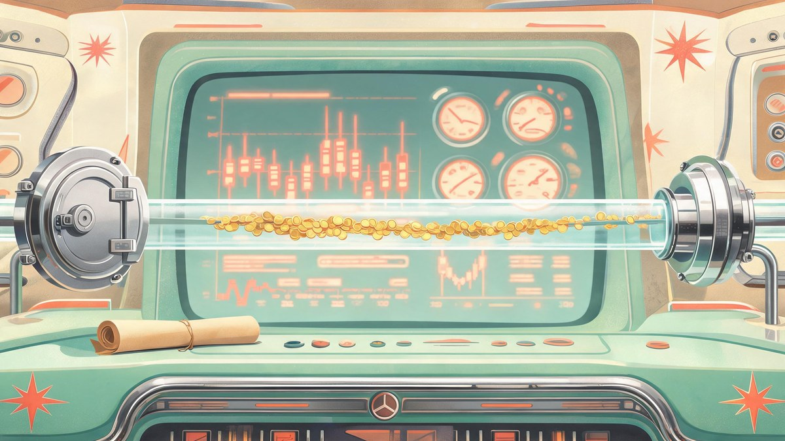
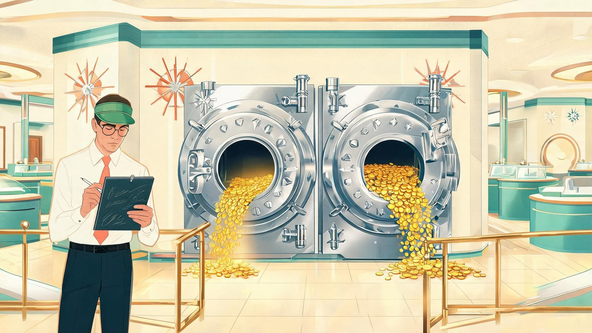
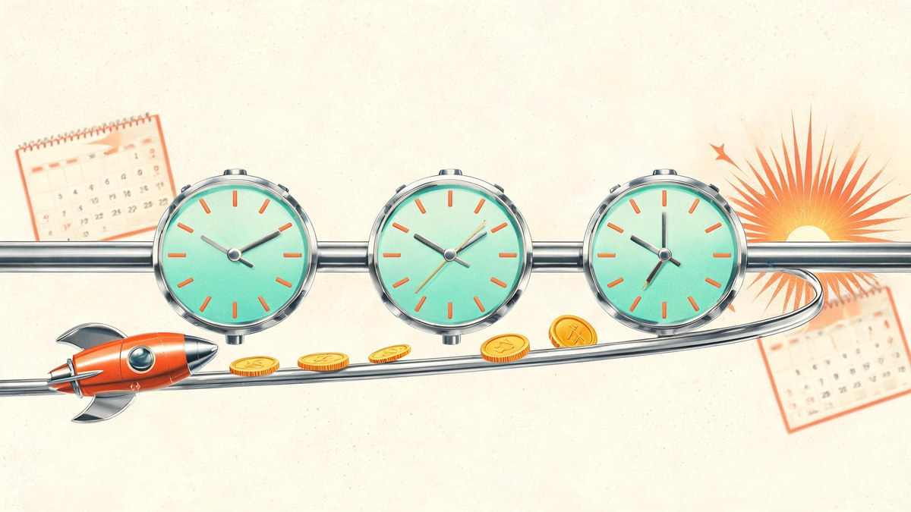

Cryptocurrency News Today: Live Market Updates

To make sense of the news on cryptocurrency today, pair a live quote with the date of the event behind the headline. Yesterday’s Bitcoin price tells you little about this minute’s market. The links below show current quotes; the reports give you context.
Compare Bitcoin with spot ETF flows, see whether Ethereum and other large coins follow BTC, and distinguish U.S. policy proposals from rules in force. Crypto trades around the clock. The prices cited in dated reports below are historical, not trading signals.
Key Takeaways
- Live quotes give the current price; dated reports give context — read each source against its own timestamp.
- Compare BTC, ETH and XRP over the same hours before calling a move market-wide.
- ETF flow figures cover one reported session; the next session may reverse the flow.
- A proposal remains a proposal until it passes the necessary legislative steps — a headline is not a law.
- Large liquidations describe forced closures, not the original cause of a move.
Quick answer
Pair a live quote with the date of the event behind the headline: open timestamped BTC, ETH and XRP quotes, compare 24-hour changes and volume, then read ETF flows and U.S. policy news against their publication dates. Dated reports describe historical prices — not trading signals.
In this guide
News on cryptocurrency today: live prices and their timing
Open a live market page for a current quote, and note its timestamp, currency and 24-hour comparison window. Even a freshly printed Bitcoin price could go stale before you finish reading.
| Market measure | Live source | What to look for |
|---|---|---|
| Bitcoin (BTC) | Live BTC quote | Price and 24-hour change, then trading volume |
| Ethereum (ETH) | Live ETH quote | Whether ETH is outperforming or lagging BTC |
| XRP and other large coins | Live XRP chart | A coin-specific catalyst versus a broad market move |
| U.S. spot Bitcoin ETF flows | Daily fund-flow tracker | Net inflows or outflows and the date of the latest session |
Crypto prices move on weekends; U.S. ETF flows follow trading sessions. Today’s coin quote may sit beside an ETF figure from a prior session. Even the starting point of a rolling 24-hour change keeps shifting.

Top coin stories to follow
Bitcoin: price action and ETF demand
Bitcoin often leads a broad crypto move. Compare price and volume with the most recent U.S. spot Bitcoin ETF session before crediting fund demand for a rally. On January 9, 2026, analysts disagreed about whether recent ETF outflows pointed to more selling or to stabilizing flows. A single session was too little to settle it. Veritya Daily’s Bitcoin market coverage follows the coin beyond one fund-flow print.
A July 22, 2026 market report put Bitcoin above $66,000 as traders weighed renewed ETF inflows and progress on a U.S. crypto bill. That figure belongs to July 22, not today’s live Bitcoin quote. Fund demand, policy expectations and rate forecasts all featured in that session. Today’s price action needs its own timestamp.
Ethereum: does ETH confirm the move?
Ethereum helps show how far a rally extends. When Bitcoin and Ethereum rise together, more of the digital asset market may be participating. BTC climbing while ETH lags suggests a narrower large-coin move. Price alone cannot distinguish spot buying from leveraged positions; volume, funding rates and liquidation data help with that distinction.
XRP, Solana and smaller coins
For an XRP or Solana jump, compare BTC and ETH over the same hours. A spike confined to one token calls for different reporting than a market-wide rise. Thin liquidity can magnify moves in smaller coins, so the percentage gain tells you little about changes to the project. The XRP news briefing adds coin-focused context.
U.S. crypto news: ETF flows and regulation
In U.S. crypto news, separate fund data from policy:
- Fund flows: Spot Bitcoin ETF inflows show net subscriptions for a reported session, not every Bitcoin purchase. The next session may reverse the flow.
- Rules and legislation: A bill advancing through Congress, an agency announcement and a rule taking effect mark different stages. A proposal remains a proposal until it passes the necessary steps.
The July 22 report attributed part of Bitcoin’s rise to optimism about the proposed CLARITY Act and ETF inflows. That was a reading of the day’s trading, not a statement that the bill had become law. U.S. crypto regulation coverage follows policy beyond one session.
“Investors should understand that bitcoin and ether are highly speculative investments. This includes when exposure is gained through an exchange-traded product (ETP).”

What can move the crypto market today?
Inflation data and a Fed decision can change rate expectations, sometimes moving crypto alongside other risk assets. ETF flows show demand through one channel; the dollar and leveraged trades add other pressures. During a sell-off, forced liquidations can make losses steeper. Keep the date and the scale of each signal in view.
| Signal | It may indicate | It does not establish |
|---|---|---|
| BTC and ETH rise together | Wider large-cap participation | That every token is rising |
| BTC rises, ETH lags | A BTC-led move | That ETH has a fundamental problem |
| ETF net inflow | Net buying through tracked funds that session | Total market-wide demand |
| Large liquidations | Leveraged positions were forced closed | The original cause of the move |
| Bill or regulatory headline | Expectations may be shifting | That a proposed rule is already in force |
A quick way to read today’s crypto market update
Read timestamped BTC, ETH and XRP quotes side by side. Compare their 24-hour changes and volume, then put the headline on the same timeline. An ETF chart may have been posted today but show an earlier session; a policy headline may describe a proposed change. The guide to verifying cryptocurrency news sets out a fuller source-checking routine.

Declining risk appetite, liquidations and fund outflows can happen together. One chart cannot tell you which mattered most. The same caution applies to a rebound: a higher price says nothing about how long the recovery will last. To stay updated without chasing alerts, keep the live quote, dated fund-flow page and official policy record handy.
Bottom line
Use live quotes for the current price and dated reporting for context. Compare BTC with ETH and other large coins, then read ETF flows and U.S. policy news against their publication dates. Veritya Daily covers crypto alongside finance, technology and security, giving you a daily briefing that explains the headline without posing as a trade alert.
Frequently asked questions
Why is crypto dropping today?
A drop can reflect a shift in risk appetite, leveraged liquidations, or selling in a specific coin. Compare BTC, ETH and the affected token over the same time window, then check whether a dated ETF or policy event actually coincides with the move. A price chart alone cannot establish the cause.
What are the latest news on crypto trading?
Start with timestamped coin prices, the latest reported U.S. spot Bitcoin ETF flows and official policy announcements. Crypto trades continuously, while ETF sessions and legislative events follow different schedules; read the date on each source before connecting them.
Are we expecting a crypto crash?
No price move or headline establishes that a crash is imminent. Watch whether selling spreads from BTC to other large coins, whether volume expands and whether liquidations intensify; those signals describe current stress, not a reliable forecast.
Is it wise to buy crypto now?
That depends on your time horizon, risk tolerance and ability to absorb losses, not one day’s headline. Use current prices and the actual status of news events to assess the situation; a short-term gain or rebound is not a guarantee of returns.
Should I hold or sell crypto?
One market update cannot answer that for your portfolio. Consider your original reason for owning the asset, your risk limit and whether the facts behind the move have changed. The SEC describes bitcoin and ether exposure as highly speculative, including through exchange-traded products.
📚 Sources & Citations (8)
- U.S. Securities and Exchange Commission — Investor Bulletin: Bitcoin and Ether ETPs (September 2024)
- Decrypt — Live Bitcoin price page (accessed Oct 2026)
- TradingView — XRP/USD live chart (accessed Oct 2026)
- SoSoValue — U.S. spot crypto ETF flow tracker (accessed Oct 2026)
- Veritya Daily — Bitcoin market coverage (2026)
- Veritya Daily — XRP news briefing (2026)
- Veritya Daily — U.S. crypto regulation coverage (2026)
- Veritya Daily — Guide to verifying cryptocurrency news (2026)